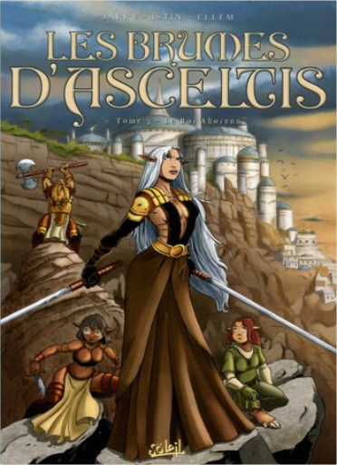
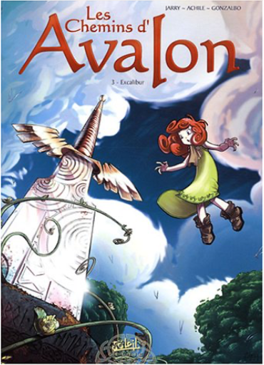
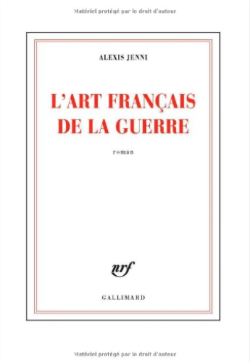

Books
Movies
Albums
Videogames
Games
BD
BD Camille
Blu-ray
Business
Camille
Comics
Cooking
Lego
Manga
Pauline
Photography
Star Wars
T'choupi
Travel
TV Shows
Un livre dont vous êtes le héro
Vinyl
Walt Disney
39
40
41
42
43
le seigneur d'ombre, tome 4 : une nouvelle ère
jean-luc istin, dim.d
le pique-nique de la famille souris
kazuo iwamura
le changement climatique expliqué à ma fille
jean-marc jancovici
4.5
les brumes d'asceltis, tome 1 : la citadelle oslanne
nicolas jarry, jean-luc istin
4.5
les brumes d'asceltis, tome 2 : le dieu lépreux
nicolas jarry, jean-luc istin

les brumes d'asceltis, tome 3 : le roi akorenn
nicolas jarry, jean-luc istin
les chemins d'avalon, tome 1 : trafic de fées
nicolas jarry, achile, axel gonzalbo
les chemins d'avalon, tome 2 : brec'hellean
nicolas jarry, achile, axel gonzalbo

les chemins d'avalon, tome 3 : excalibur
nicolas jarry, achile, axel gonzalbo
histoire d'amour
régis jauffret
4
virgin suicides
eugenides jeffrey
4.5

l'art français de la guerre
alexis jenni
39
40
41
42
43


 Made with Delicious Library Made with Delicious Library
Made with Delicious Library Made with Delicious Library